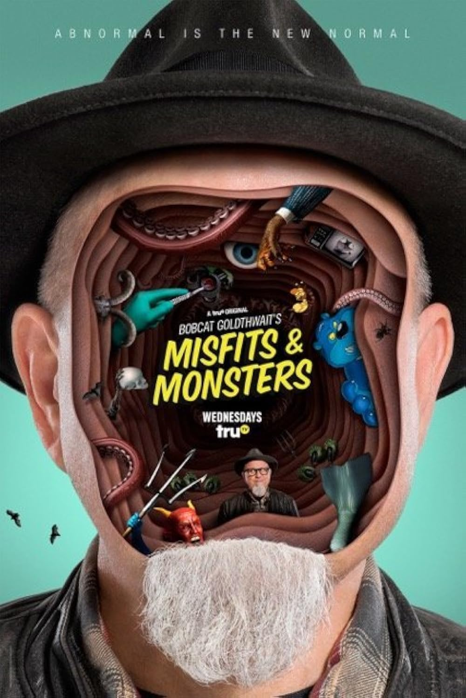

← Back
Misfits & Monsters
Director
Add director name
Lead Actors
Add lead cast
Notable Festivals
only 2 images available on site
Logline
Add a one-sentence logline for this project.
Press
Press
Add press quote
Episodes
01
Bubba the Bear
A voiceover actor starts to lose his sanity when his popular cartoon character becomes his real-life stalker.
02
Face in the Car Lot
Set in the 1970s, a journalist tries to prove that an uncouth car salesman running for president is an actual werewolf.
03
Devil in the Blue Jeans
A mockumentary follows the sudden downfall of a pop star after Satan decides to back out of their bargain.
04
The Goatman Cometh
A mother hosts a neighborhood sleepover for her indoor-loving son, only for it to be crashed by a murderous monster.
05
Mermaid
A man falls in love with an actual mermaid at Weeki Wachee Springs, but must face her angry father, Neptune.
06
The Patsy
An incompetent soldier accidentally shoots his commander and is recruited for a time-travel mission to stop the JFK assassination.
07
Better World
A cutting-edge scientist creates two highly advanced AI forms, which quickly turn against him.
08
The Buzzkill
A fighting musical duo is about to break up when a freak accident transforms them into bees.
Gallery

